plots.RmdThe accesstocare has 3 functions that return ggplot/ggiraph plots. They are primarily meant to keep all of the examples consistent and easier to change. They can also be used in an interactive R session, or in your own data product.
The included plots are:
atc_plot_hospitals() returns a scatter plot comparing Hospital vs Population counts in a given county.atc_plot_us_map() returns a “hexagon” map of the USA, which includes Hawaii, Alaska, and DC. It overlays data from the Access To Care analysis.atc_plot_state_map() returns a plot with actual shape of the state, and highlights each county with a color. The color will depend on which variable is being used to plot.The output atc_plot_us_map() function defaults to highlight the difference in the population count per state:
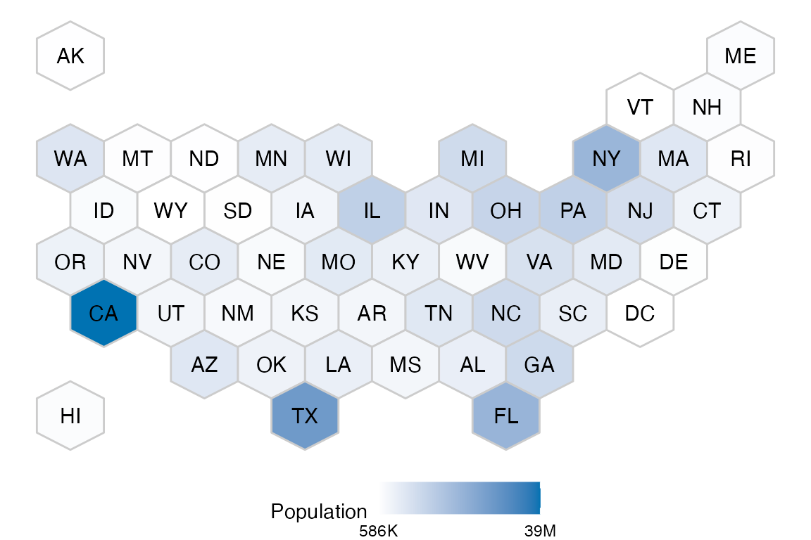
To display a different metric, pass the variable argument. This example shows how to plot the number of counties from each state that are undeserved:
atc_plot_us_map("below")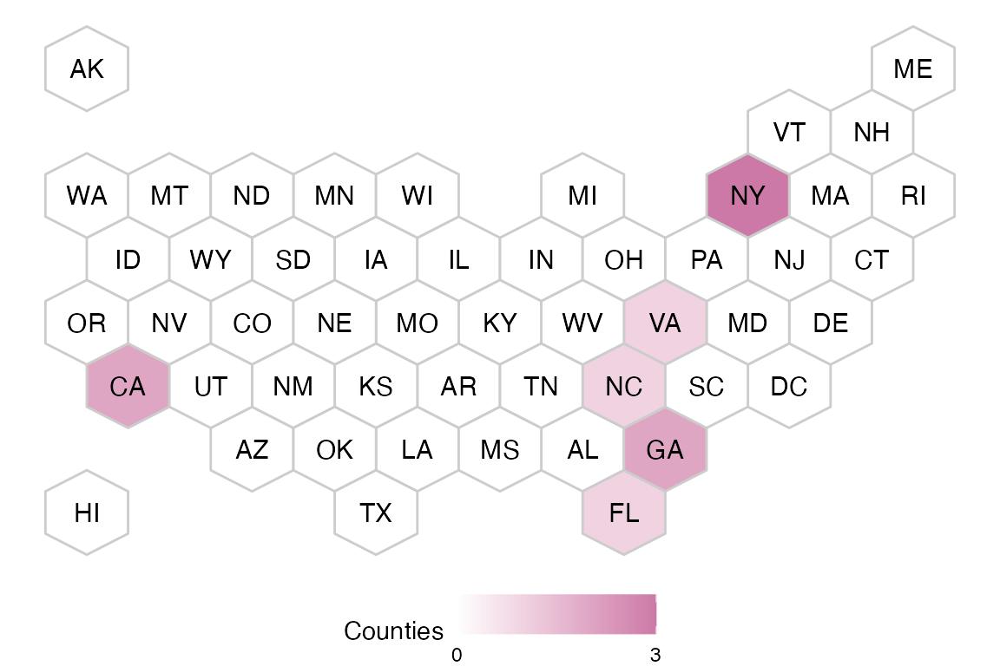
The colors for the hospitals and population variables can be customized:
atc_plot_us_map("hospitals",
colors = list(high = "orange", low = "blue")
)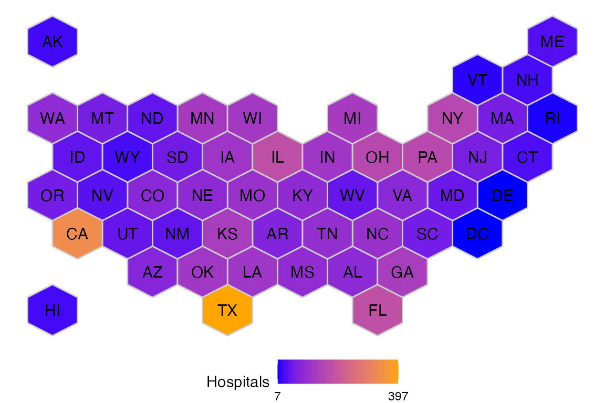
To try out the interactive version of the map, use ggiraph::girafe(). And pass the map’s output as the ggobj argument of that function:
ggiraph::girafe(ggobj = atc_plot_us_map())The output of atc_plot_state_map() defaults to displaying the shape of every individual county. The plot will display if the county has the appropriate number of hospitals, or if it has more, or if it has less than expected, based on linear model boundaries.
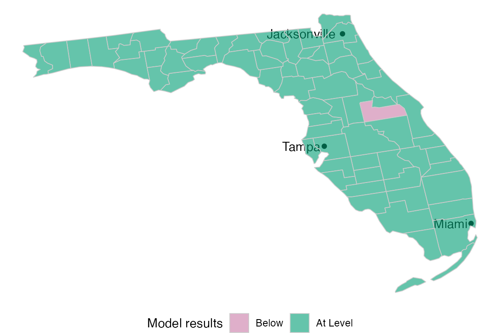
To view a given state’s results, pass the name as the state argument of the function:
atc_plot_state_map("New York")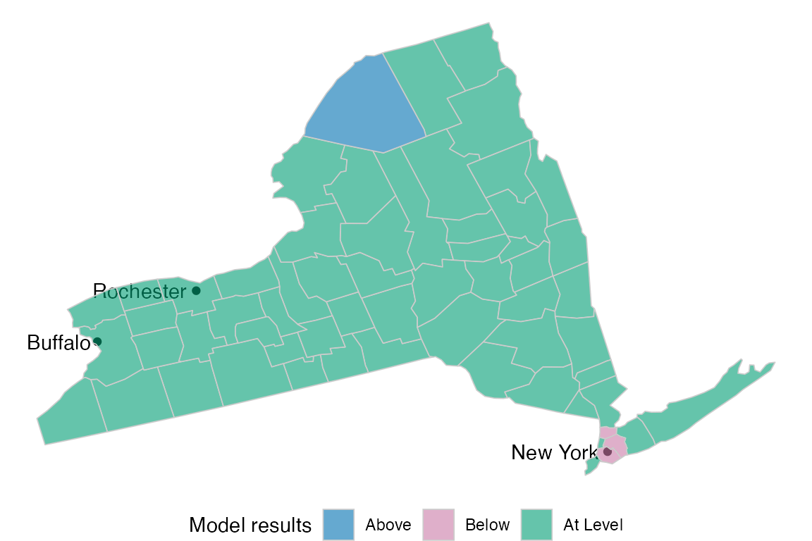
The status colors can be customized by passing the model_color argument:
atc_plot_state_map("New York",
model_colors = list(above = "blue", below = "orange", ok = "white")
)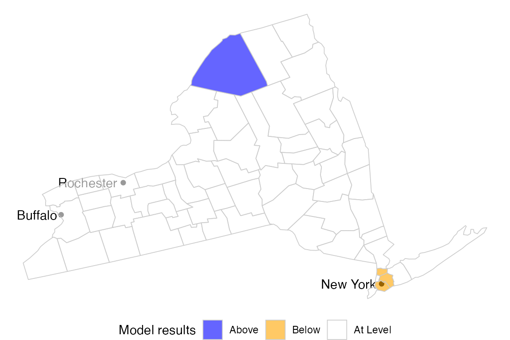
The hospitals, and population variables are also available for plotting. Pass the variable argument to see:
atc_plot_state_map("New York",
variable = "population"
)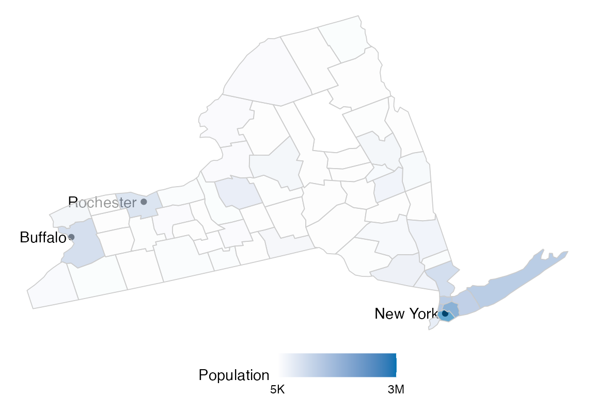
The colors of the continuous variables can also be customized using the color argument:
atc_plot_state_map("New York",
variable = "population",
colors = list(low = "orange", high = "blue")
)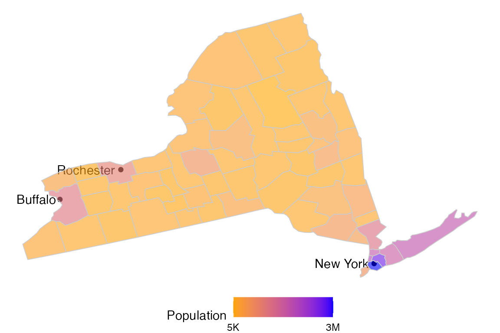
The display of more or less of the most populated cities can be controlled using the top_cities argument.
atc_plot_state_map("New York", top_cities = 6)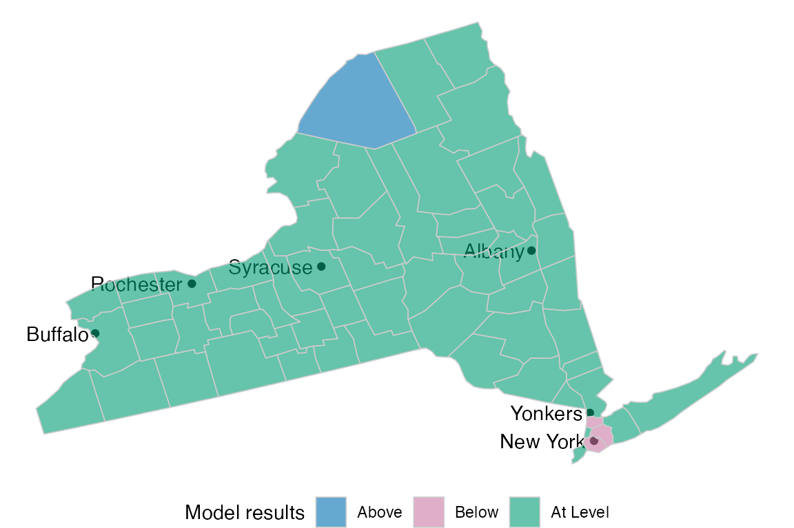
To get a map of every county in the US, pass All US to the state argument:
atc_plot_state_map("All US", top_cities = 0)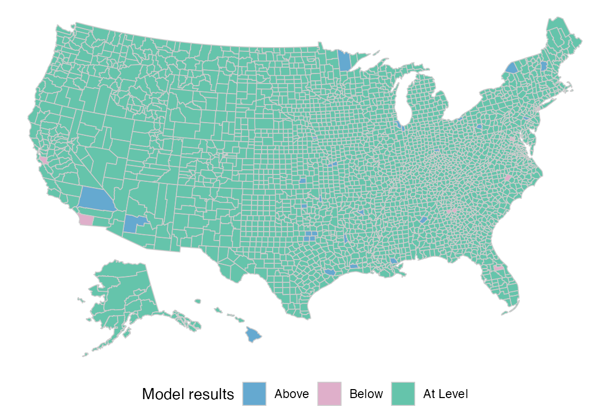
To try out the interactive version of the map, use ggiraph::girafe(). And pass the map’s output as the ggobj argument of that function:
ggiraph::girafe(ggobj = atc_plot_state_map())The atc_plot_hospitals() function displays a scatter plot comparing Hospitals to Population for all the counties in the US.
Overlay the upper and lower bound of the linear model using show_model_results:
atc_plot_hospitals(show_model_results = TRUE)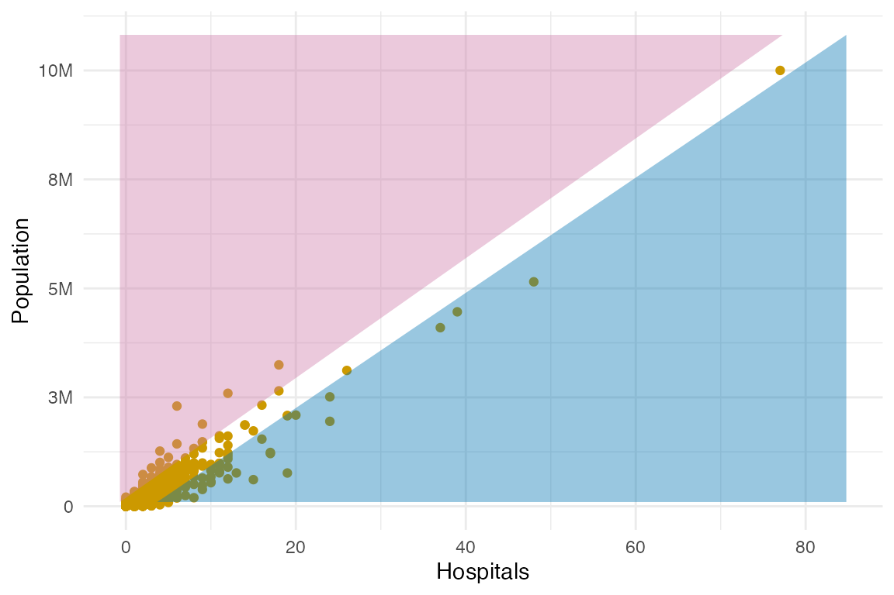
The bound colors can be customized by modifying the model_colors argument:
atc_plot_hospitals(show_model_results = TRUE,
model_colors = list(above = "green", below = "orange")
)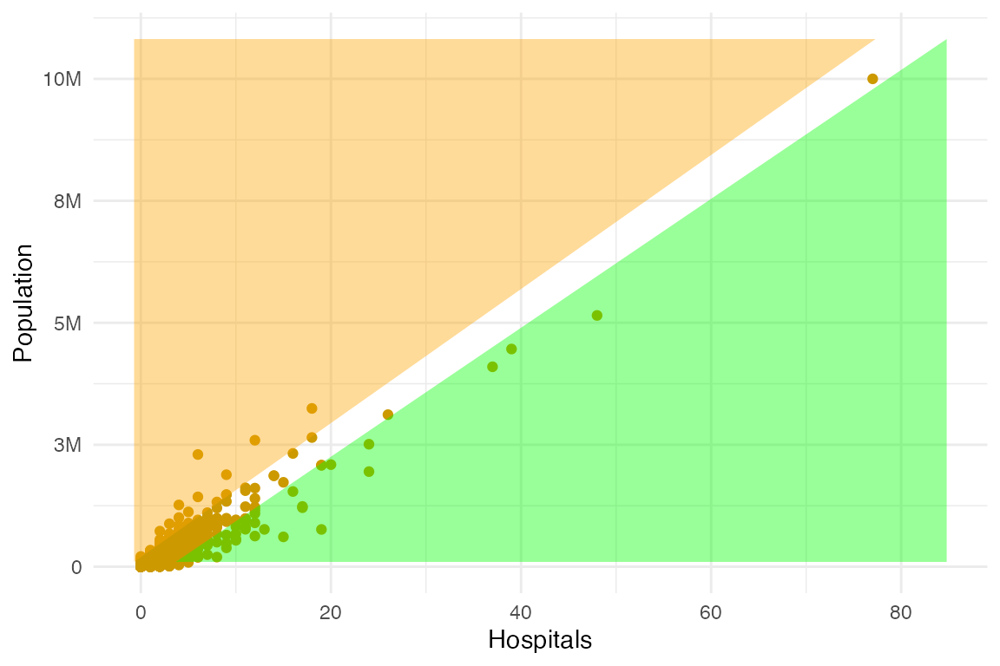
To try out the interactive version of the map, use ggiraph::girafe(). And pass the map’s output as the ggobj argument of that function:
ggiraph::girafe(ggobj = atc_plot_hospitals())